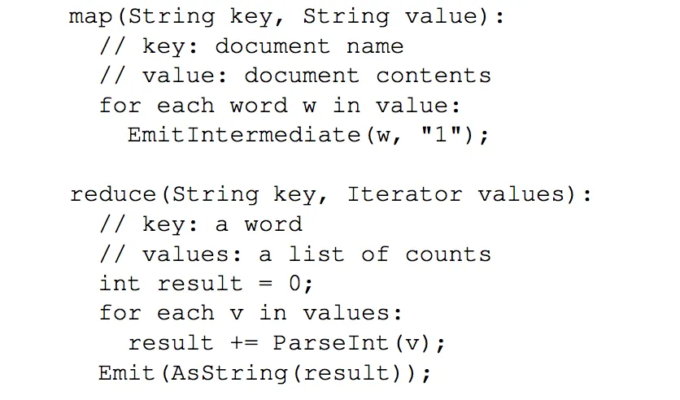
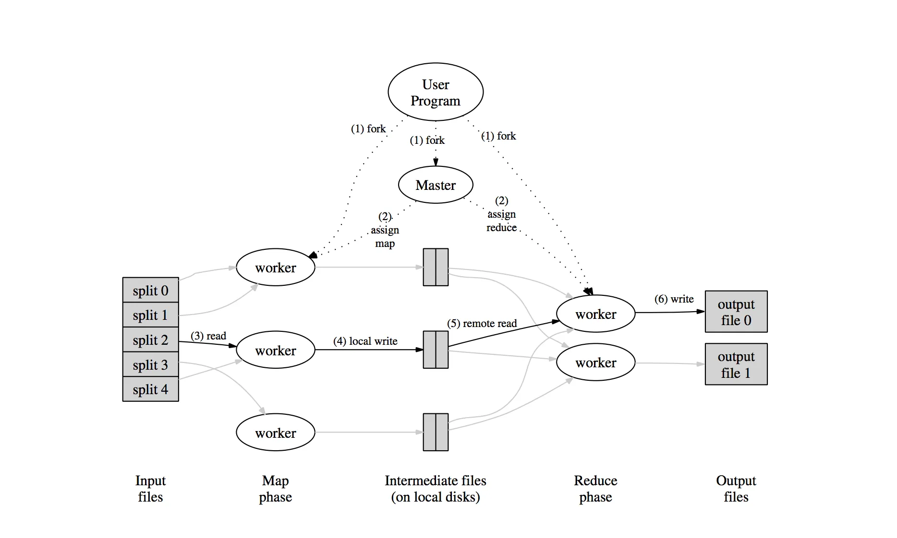

MapReduce Overview
In this blog, I will be discussing MapReduce programming model and how it works. This blog is based on the original MapReduce research paper MapReduce: Simplified Data Processing on Large Clusters from Google.
MapReduce is a programming model and an associated implementation for processing and generating large data sets. User specifies a map function that processes a key/value pair to generate a set for intermediate key/value pairs, and a reduce function that merges all intermediate values associated with the same intermediate key.
MapReduce programs written in these functional styles are automatically parallelized and executed on a large cluster of commodity machines. The runtime system takes care of the details of partitioning input data, scheduling the program’s execution across a set of machines, handling machine failures, and managing the required inter-machine communication. This allows programmers without any experience with parallel and distributed systems to easily utilize the resources of a large distributed system.
Most computations of a MapReduce task are conceptually straightforward like counting the occurrence of each word in a document, counting URL access frequency in request logs, etc. However, the input data is usually large and computation has to be distributed across hundreds or thousands of machine to finish in a reasonable amount of time.
The model is easy to use, even for programmers without experience with parallel and distributed systems, since it hides messy details of parallelization, fault-tolerance, locality optimization, and load balancing.
Programming Model Link to heading
MapReduce is inspired by the map and reduce primitives present in LISP and many other functional languages. Computation takes a set of key/value pairs as input and produces a set of output key/value pairs.
The user provides two functions: Map and Reduce.
Map: Written by the user which takes an input pair and produces a set of intermediate key/value pairs. The MapReduce library groups together all intermediate values associated with the same intermediate key and passes them to the reduce function.
Reduce: Reduce function, also written by the user, accepts an intermediate key and a set of values for that key. It merges these values to form a possibly smaller set of values. Zero or one output value is produced per reduce invocation. The Intermediate values are supplied to the user’s reduce function via an iterator. This allows us to handle lists of values that are too large to fit in memory.
The structure for the user-defined map and reduce functions are as follows.
- map (k1, v1) → list(k2, v2)
- reduce (k2, list(v2)) → list(v2)
Map and Reduce function for word count example would look as below.

Also, the user writes code to fill in a MapReduce specification object with the names of the input and output files, and optional tuning parameters.
Other examples of MapReduce problems are
- Distributed Grep
- Count of URL access frequency
- Reverse Web-Link Graph
- Term Vector Per Host
- Inverted Index
- Distributed Sort
Execution Link to heading
To distribute map operation, partition the input data into a set of M splits so that each can be processed in parallel. Reduce invocations are distributed by partitioning the intermediate key spaces into R (number of reducers) pieces using a partitioning function e.g. (hash(key) mod R). R and the partitioning function are specified by the user.

Numbers in the above diagrams represent the order in which these tasks are executed.
-
Splits the input file in M chunks and starts many copies of the program on a cluster of machines.
-
Master picks idle workers and assigns each one a
maptask or areducetask out of Mmaptasks and Rreducetasks. -
Map task worker reads and parses key/value pairs out of input split assigned and passes each key/value pair to user-defined
mapfunction. Output key/value pairs by map function are buffered in memory. -
Buffered pairs are partitioned in R partitions and written to the local disks periodically. Locations of these partitioned are passed to the master, who forwards these locations to reduce workers.
-
Reduce workers are notified by the master. Intermediate data stored on local disks of
mapworkers are read by reduce workers using remote procedure calls and sorted to group same key together. -
Reduce worker passes each unique intermediate key and set of values to
reducefunction. The output of the reduce function is appended to the final output file for this reduce partition.
After successful completion, the output of the MapReduce execution is available in the R output files one per reduce task.
Master Link to heading
One of the copies of the program is special which is called the master. Master keeps several data structures. For each map task and reduce task, it stores the state (idle, in-progress, or completed) and the identity of the worker machine (for non-idle tasks).
Master propagates locations of intermediate files regions from map tasks to reduce tasks. For each completed map tasks master stores R intermediate file regions produced by the map task. These information’s are sent to master by map tasks on its completion and incrementally pushed to workers with in progress reduce tasks by the master.
Failures Link to heading
How does MapReduce handle the failures? There is two kinds of failures.
Worker Failures: Master pings every worker periodically. If no response is received from a worker in a certain amount of time, the master marks the worker as failed. Any map tasks completed by the worker are reset back to their initial idle state and therefore becomes eligible for rescheduling. Completed map tasks are re-executed on a failure because their output is stored on the local disk(s) of the failed machine and is therefore inaccessible. Completed reduce tasks do not need to be re-executed since their output is stored in a global file system.
When a map task is executed first by worker A and then later executed by worker B (because A failed), all workers executing reduce tasks are notified of the re-execution. Any reduce task that has not already read the data from worker A will read the data from worker B.
Master Failures: Master failures are handled by writing periodic checkpoints of the master data structures.
Locality Link to heading
MapReduce frameworks take advantage of a distributed file system like GFS, HDFS, etc. Distributed file system divides each input file into 64 MB blocks and stores several copies of each block on different machines. The MapReduce master takes the location information of the input files into account and attempts to schedule a map task on a machine that contains a replica of the corresponding input data.
Task Granularity Link to heading
MapReduce subdivides the map phase into M pieces and the reduce phase into R pieces, as described above. Ideally, M and R should be much larger than the number of workers machines. Having each worker perform many different tasks improves dynamic load balancing, and also speeds up recovery when a worker fails.
There are practical bounds on how large M and R can be, since the master must take O(M + R) scheduling decisions and keeps O(M * R) state in memory.
Partitioning Function Link to heading
By default, MapReduce provides a default partitioning function which uses hashing (e.g “hash(key) mod R”) where R is provided by the user of MapReduce programs. Default partitioning function tends to result in very well-balanced partitions. However, in some cases, it is useful to partition the data by some other functions of the key. For example, Some cases output keys are URLs and we want to all entries for a single host to end up in the same file. To Support these cases, users of MapReduce library can specify special partitioning functions.
Combiner Function Link to heading
In some cases, there is significant repetition in the intermediate keys produced by each map task, and all of these repetitive keys will be sent over the network to single reduce task then added together by the reduce function to produce one number. To reduce this overhead, users of MapReduce library can specify an optional combiner function which does the partial merging of this data before it is sent over the network.
The Combiner function is executed on each machine that performs a map task. Typically the same code is used to implement both the combiner and the reduce functions. The only difference between a reduce function and a combiner function is how the MapReduce library handles the output of the function. The output of a reduce function is written to the final output file. The output of a combiner function is written to an intermediate file that will be sent to a reduce task.
References Link to heading
https://static.googleusercontent.com/media/research.google.com/en//archive/mapreduce-osdi04.pdf